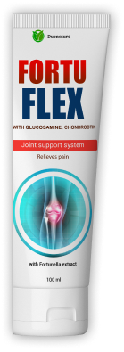
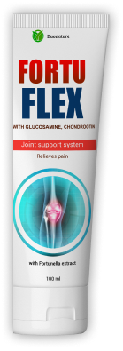

Крем Fortuflex эффективен при лечения и профилактики заболеваний позвоночника и суставов, таких как: остеохондроз, межпозвонковые грыжи, дискогенный радикулит, остеоартрит, остеоартроз, суставные контрактуры. Fortuflex снимает боль в позвоночнике и суставах, останавливает воспалительные процессы, способствует регенерации межпозвонковых дисков и хрящевой ткани, улучшает микроциркуляцию в тканях.
Эффект заметен уже после первого применения. Регулярное применение крема помогает остановить прогрессирование заболеваний опорно-двигательного аппарата
 


 Fortuflex προϊόν №1
Fortuflex προϊόν №1
 Ανακουφίζει γρήγορα τον πόνο και τη φλεγμονή
Ανακουφίζει γρήγορα τον πόνο και τη φλεγμονή
 Αυξάνει την κινητικότητα των αρθρώσεων
Αυξάνει την κινητικότητα των αρθρώσεων
 * Τα αποτελέσματα μπορεί να διαφέρουν ανάλογα με τα μεμονωμένα χαρακτηριστικά του οργανισμού
* Τα αποτελέσματα μπορεί να διαφέρουν ανάλογα με τα μεμονωμένα χαρακτηριστικά του οργανισμού


 Αφροδίτη
Αφροδίτη
 Έχω δοκιμάσει πολλές διαφορετικές θεραπείες για την αρθροπάθεια. Ειλικρινά, αυτό που συμβούλευαν οι γιατροί δεν με βοήθησε και πολύ.
Έχω δοκιμάσει πολλές διαφορετικές θεραπείες για την αρθροπάθεια. Ειλικρινά, αυτό που συμβούλευαν οι γιατροί δεν με βοήθησε και πολύ.
 Θεόδωρος
Θεόδωρος
Αφαιρεί όλες τις διαταραχές και τις ασθένειες των αρθρώσεων.
ΑΣΦΑΛΕΙΑ Η φυσική σύνθεση εξαλείφει την εμφάνιση παρενεργειών ή ερεθισμών.